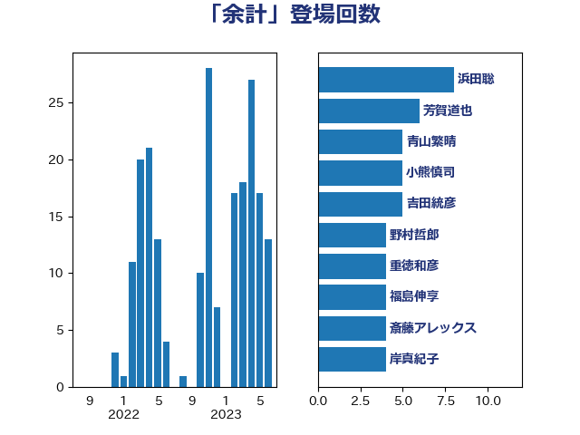

単語「余計」

| 浜田聡 | NHK党 | 8 回 |
| 芳賀道也 | 国民民主党 | 6 回 |
| 青山繁晴 | 自由民主党 | 5 回 |
| 小熊慎司 | 立憲民主党 | 5 回 |
| 吉田統彦 | 立憲民主党 | 5 回 |
| 野村哲郎 | 自由民主党 | 4 回 |
| 重徳和彦 | 立憲民主党 | 4 回 |
| 福島伸享 | 無所属 | 4 回 |
| 斎藤アレックス | 国民民主党 | 4 回 |
| 岸真紀子 | 立憲民主党 | 4 回 |
| 山田勝彦 | 立憲民主党 | 4 回 |
| 青山大人 | 立憲民主党 | 3 回 |
| 鈴木義弘 | 国民民主党 | 3 回 |
| 米山隆一 | 立憲民主党 | 3 回 |
| 礒崎哲史 | 国民民主党 | 3 回 |
| 山本太郎 | れいわ新選組 | 3 回 |
| 大塚耕平 | 国民民主党 | 3 回 |
| 高橋千鶴子 | 日本共産党 | 2 回 |
| 青柳仁士 | 日本維新の会 | 2 回 |
| 青島健太 | 日本維新の会 | 2 回 |
| 鈴木宗男 | 日本維新の会 | 2 回 |
| 近藤和也 | 立憲民主党 | 2 回 |
| 藤巻健太 | 日本維新の会 | 2 回 |
| 萩生田光一 | 自由民主党 | 2 回 |
| 若林洋平 | 自由民主党 | 2 回 |
| 笠井亮 | 日本共産党 | 2 回 |
| 福田昭夫 | 立憲民主党 | 2 回 |
| 田村貴昭 | 日本共産党 | 2 回 |
| 田名部匡代 | 立憲民主党 | 2 回 |
| 猪瀬直樹 | 日本維新の会 | 2 回 |
| 津島淳 | 自由民主党 | 2 回 |
| 泉健太 | 立憲民主党 | 2 回 |
| 河野太郎 | 自由民主党 | 2 回 |
| 池下卓 | 日本維新の会 | 2 回 |
| 杉本和巳 | 日本維新の会 | 2 回 |
| 後藤祐一 | 立憲民主党 | 2 回 |
| 川田龍平 | 立憲民主党 | 2 回 |
| 小野泰輔 | 日本維新の会 | 2 回 |
| 堀場幸子 | 日本維新の会 | 2 回 |
| 上田清司 | 国民民主党 | 2 回 |
| 齋藤健 | 自由民主党 | 1 回 |
| 馬場雄基 | 立憲民主党 | 1 回 |
| 青木愛 | 立憲民主党 | 1 回 |
| 階猛 | 立憲民主党 | 1 回 |
| 長浜博行 | 無所属 | 1 回 |
| 野間健 | 立憲民主党 | 1 回 |
| 道下大樹 | 立憲民主党 | 1 回 |
| 谷田川元 | 立憲民主党 | 1 回 |
| 谷公一 | 自由民主党 | 1 回 |
| 西村智奈美 | 立憲民主党 | 1 回 |
| 藤岡隆雄 | 立憲民主党 | 1 回 |
| 船田元 | 自由民主党 | 1 回 |
| 美延映夫 | 日本維新の会 | 1 回 |
| 緒方林太郎 | 無所属 | 1 回 |
| 篠原孝 | 立憲民主党 | 1 回 |
| 神谷宗幣 | 参政党 | 1 回 |
| 石橋通宏 | 立憲民主党 | 1 回 |
| 石井苗子 | 日本維新の会 | 1 回 |
| 石井章 | 日本維新の会 | 1 回 |
| 田中健 | 国民民主党 | 1 回 |
| 牧野たかお | 自由民主党 | 1 回 |
| 牧義夫 | 立憲民主党 | 1 回 |
| 漆間譲司 | 日本維新の会 | 1 回 |
| 渡辺周 | 立憲民主党 | 1 回 |
| 渡辺創 | 立憲民主党 | 1 回 |
| 深澤陽一 | 自由民主党 | 1 回 |
| 江島潔 | 自由民主党 | 1 回 |
| 櫻井周 | 立憲民主党 | 1 回 |
| 梅村聡 | 日本維新の会 | 1 回 |
| 梅村みずほ | 日本維新の会 | 1 回 |
| 柳ヶ瀬裕文 | 日本維新の会 | 1 回 |
| 柚木道義 | 立憲民主党 | 1 回 |
| 松本尚 | 自由民主党 | 1 回 |
| 松川るい | 自由民主党 | 1 回 |
| 東徹 | 日本維新の会 | 1 回 |
| 杉尾秀哉 | 立憲民主党 | 1 回 |
| 杉久武 | 公明党 | 1 回 |
| 本庄知史 | 立憲民主党 | 1 回 |
| 末松義規 | 立憲民主党 | 1 回 |
| 早坂敦 | 日本維新の会 | 1 回 |
| 新藤義孝 | 自由民主党 | 1 回 |
| 打越さく良 | 立憲民主党 | 1 回 |
| 川合孝典 | 国民民主党 | 1 回 |
| 岩谷良平 | 日本維新の会 | 1 回 |
| 山際大志郎 | 自由民主党 | 1 回 |
| 山本剛正 | 日本維新の会 | 1 回 |
| 山口壯 | 自由民主党 | 1 回 |
| 山下芳生 | 日本共産党 | 1 回 |
| 室井邦彦 | 日本維新の会 | 1 回 |
| 奥下剛光 | 日本維新の会 | 1 回 |
| 天畠大輔 | れいわ新選組 | 1 回 |
| 大石あきこ | れいわ新選組 | 1 回 |
| 大島敦 | 立憲民主党 | 1 回 |
| 塩川鉄也 | 日本共産党 | 1 回 |
| 坂本祐之輔 | 立憲民主党 | 1 回 |
| 土田慎 | 自由民主党 | 1 回 |
| 嘉田由紀子 | 無所属 | 1 回 |
| 和田有一朗 | 日本維新の会 | 1 回 |
| 古庄玄知 | 自由民主党 | 1 回 |
| 古川禎久 | 自由民主党 | 1 回 |
| 伊藤渉 | 公明党 | 1 回 |
| 伊藤岳 | 日本共産党 | 1 回 |
| 井上哲士 | 日本共産党 | 1 回 |
| 中条きよし | 日本維新の会 | 1 回 |
| 中島克仁 | 立憲民主党 | 1 回 |
| 三浦靖 | 自由民主党 | 1 回 |